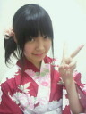
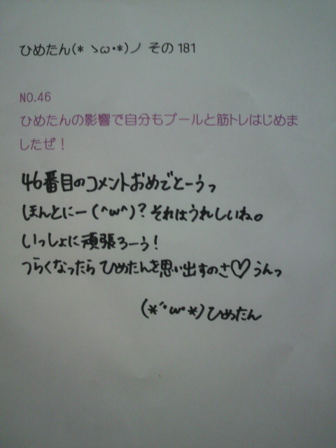
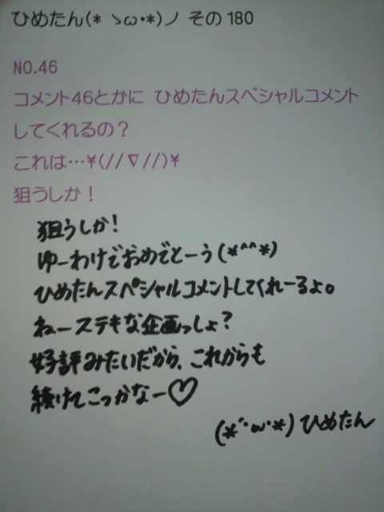
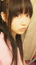
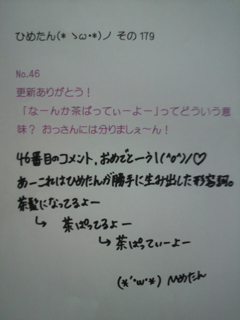
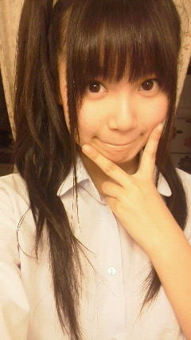
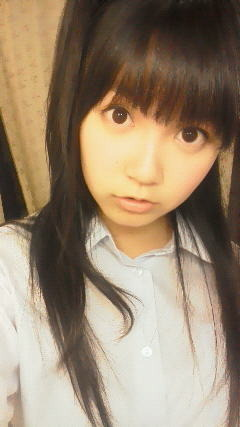

返回列表-BACK TO INDEX
おまつりー！

今年初のお祭り参加よ＼(^O^)／
ゆーわけでままに浴衣着せてもらたー
お友達とかメンバーさんとか、誰か知り合いに会わないかなーって
ずっときょろきょろしよったけど、結局誰にも会わんかった(´・ω・`)
東京って、広いんだね。
それでいっこ思ったのが、東京で
「広島風お好み焼き屋さん」の屋台をいっぱいみたんだけど、
広島のお祭りの屋台には「広島風お好み焼き屋さん」ないんだよー。
普段からいっぱい食べてるからなのか、
屋台のすぐそばにお好み焼き屋さんがいっぱいあるからなのか、
何でかよーわからんけどっ
 ちなみに今月の１６日が誕生日だからよかったら祝ってください( ´ ▽ ` )ノ
ちなみに今月の１６日が誕生日だからよかったら祝ってください( ´ ▽ ` )ノお誕生日おめでとーう☆
素敵ないちねんになりますようにっ。
これからもよろしくねーいろいろ頑張りましょしょ。
 あさって高校野球最後の大会なんだ(^^)
あさって高校野球最後の大会なんだ(^^)応援メッセージくれたら嬉しいな♪
高校野球！
いーねなんか素敵だね。
ひめたんと同じ高校生さんが活躍してるってこと考えたら
応援したくなるね(*^^*)
暑いけど気をつけてね！無理はしちゃだめよっ
夏休みに学校の友達と遊ぶ約束してますか？
「遊ぼうねーっ」てのはいろんな子と言ってるんだけど
乃木坂のスケジュールがふわっとしてて、あんま具体的な約束はできないの。
あーでも！
広島から何人かお泊まりにきてくれるって∩^ω^∩
確かひめたんは走ったり運動がダメみたいですが
何故バスケ同好会入ってたんですか？
スポーツできる子になりたかったの。
だからとりあえずバスケやってみたんだけれども
結局、もともと運動できる子になんて当然勝てなくてー...
そん時通ってたダンススクールとの両立で悩んだ時に、ダンスをとったとさ。
ひめたんは英会話はできる？
できません(´・ω・`)
ＯＣゆーて、一時間英語しか使えませんみたいな授業があるんだけど
英語わっかんないからずっと黙ってる。死んじゃうー。
ひめたんビーム！は
１ 見つめるver
２ 見つめる＋手が加わるver
３ 見つめる＋手が加わる＋ウインクver
他にもある？
この前の大阪全握で新技を身につけました。
なんだけど、言葉で説明するのは難しいから手っ取り早い方法をご提案。
直接浴びにきてください(^ω^)
ひめたんに推し変しようと思うんだけどひめたんは推しても大丈夫？
安心安全？
かもーんぬ(^O^)
ひめたんは大丈夫。安全安心よー何がだろう(わら)
嬉しいよーありがとう///
阿部真央さんというアーティストなんですがご存知でしょうか？
あーっ
お友達があべまさん大好きで、「聴いてみ(^^)」って勧めてくれた！
けど聴いてなーい←
こりゃ聴くしかっ
ひめたんの広島時代や、今の時代で、フルーツバスケットって、
やったことあるのかな？知ってるのかな？
知っとるよ。やったことあるよー。
小学生ん時の学期末のお楽しみ会の鉄板出し物ネタだったなー懐かしいなー。
日芽香はYシャツの袖を捲ってる人捲ってない人どっちがいいー??
ひめたん的にはまくっててほしいかな(*^^*)
腕好きなの。男女問わず。
みんな腕まくるしかーあ
私は赤ぶちメガネなんだけど、赤ぶちはどうかな？？＞＜
ひめたんの周りは赤ぶち率高いよ！
赤ぶちはみんながみんな似合うわけじゃないから
そんな中で似合う人って素敵だと思う(*^^*)
バラードの曲と言ったら竹内まりやさんが好きなんだけど、
ひめたんは竹内まりやさんの曲は好き？
「元気をだして」
...しかわからんけど、素敵な曲だーよね(*^^*)
もっといろいろ聴いてみよかな←
 車の運転してみたいと思う？
車の運転してみたいと思う？ピンクの軽にのるってずっと決めてたんだけど
ここに来て「いや車いらないんじゃね？」って思ったりする...
 俺夏休みの間、カナダにホームステイしに行くんだよ♪(*^^*)
俺夏休みの間、カナダにホームステイしに行くんだよ♪(*^^*)応援してね♪(>_<)
ホームステイ！
かっくいーいっ
英語話せるのねーいいな憧れるなー///
日本が恋しくなったら、乃木坂さんのブログとかみて元気だしてね(ノ_;`)

いま見たら143コメントあってびっくりーっ
ありがとうございます///
明日になって146を越えてたら、次回画像載せるねっ
(*´・ω・*)ひめたん
2012/07/17 10:54｜
全国握手会in大阪!
来てくださったみなさん
本当にありがとうございました(^O^)
今日の握手のペアはれかたーん(桜井玲香chan)!
桜井ふぁんのみなさんありがとうございました＊
桜井ふぁん。どんな感じなのかなーって思ってたんだけど
すーごいフレンドリーで優しかった('・∀・`)
ひめきゅんさんも、いつもありがとーう！
第13レーンは終始和やかな感じでいい感じだったーよ！
んでライブもー
ひめたんパフォーマンスするの久しぶりだったけ、本当に楽しかった！
今回は最後のおいシャン全握ってことで
このメンバーで狼を踊ることももうないのかなー...とか思うと
早かったね。あっという間の２nd期間でした。
２ndのアンダーの団結力、好きだったよ。
初めてPV作ってもらって、初めて乃木どこの歌収録もさせてもらって、
いっぱいサッカーの応援しに遠征して、
アンダーステーション始まったのも、
ティッシュ配りを除いて定期的に乃木ここ始まったのも
２ndのアンダーみんなでの素敵な思い出です(*^^*)
今まで一緒に頑張ってくれたみんなありがとう。
３rdもお楽しみに！
それでー、それからー、
大阪全握はめちゃ久しぶりだったの(^ω^)
イオンツアー以来だよって方には、今回曲を引っ提げて来れて
パフォーマンスできてよかったです！
あとは、大阪についてからのこと紹介するとー
夜は難波のお好み焼き屋さんで、鉄板焼をいただきました(^O^)
ひめたんは広島人だからもちろん広島風は好きだけど
関西風も好きだーよっ
で、せっちゃん(宮澤成良chan)と同じお部屋にお泊まりして
いろいろお話ししました∩^ω^∩
なんかーこんなに話合うと思わなかったから発見だねっ
楽しかったよー！
帰りの新幹線はみさみさ(衛藤美彩chan)とちま(樋口日奈chan)と
お隣さん座って東京に帰ってきました＼(^O^)／☆
(*´・ω・*)ひめたん

2012/07/15 00:18｜

昨日の日記ー(・∀・)
昨日はボイトレと、浪漫の撮影でした！
いつ放送かなー。ぜひチェックしてみてください！
レッスンは、歌う体力をつけてこーてことで
歌いながら踊りながらってのを頑張ったんだけど
やーもー大変ですね('・・`)
ほかのアイドルさんたち、すごいなーて思いました。
乃木坂も頑張らんとね(`・∀・')＊
えいえいおーよっ
あーそれからっ
まりっか (伊藤万理華chan)と一緒に途中まで帰ったー(o>ω<o)
いろいろお話ししたのよ。いろいろお話ししたの。
まりっか大好きー！
明日は大阪！
楽しみすぎるね///
素敵なパフォーマンスができますよーうに。
それから、大阪の街楽しんでやるぞー(^ω^)
 今度から「46」とか「146」とか「246」とか
今度から「46」とか「146」とか「246」とか 「46」がらみのキリ番の人にスペコメするとかしてくれない？
んー試しに今日やってみよう！

ひめたんって髪染めてる？
そう。それ書かなきゃだよね。それ大事だよね。
つまり昨日のブログは、「ひめたん茶髪になったみたいだよー不思議ねー」
って意味だったの。ライトの加減だと思うんだけど。
実際まっくろです(^ω^)
北海道では鳥の唐揚げのこと、ザンギって呼ぶんだよ、知ってた？
ざんぎー？
か、かっくいーいい(*/ω＼*)
ひめたんも使おかなーとかゆーてきっと夜には忘れちょん←
ひめたんは暑いの大丈夫？
ひめたんは暑いの大丈夫じゃないよ('・ω・`)
もうやばし。ばてばて。しかも汗っかきだからねー
さゆりんごビームはひめたんにはできるの?
できるよー
ひめたん天才だもーんどや(`・ω・')
質問やけど、ひめたんは祇園祭は見たことある??
なーい←
どこのお祭り？簡単に教えてくださーい☆
プール行って泳ぐの続けてるかな？
ちょっ
月曜はお仕事しとったけど、
それ以外毎日行ってるからねー(^O^)
決めたの。この夏は、時間を見つけて泳ぐ！
夏と言ったら‥？高校野球だよね？w
な、夏と言ったら、高校野球しか...
確かに夏と言ったら高校野球ってのもありですよ(^^)
それがイコールになるかと聞かれたら...
やー繋がる、かな。
ひめたんビームは、一度に何人に有効なんでしょうか？(゜o゜
ひめたんビームはそんな、誰にでも送ったりしないよーっ
あなたにだけしか送りません///きゃ
作文得意ですか？得意だったらアドバイス下さい！
自分で得意って言えないけど、好きな分野ではあります∩・ω・∩
かっこいい単語を並べたら、「何こいつかっこよくね？ー」てなるはず！
真似せんほうがいいかもよ？
ちなみに一番自信ある科目は？
家庭科！わら
今回は数学もなかなか頑張ったー
ひめたん(*´・ω・*)
2012/07/13 14:18｜
おーいえあ＼(^O^)／
今日は大阪全握のリハしてきたーよ。
まー楽しみにしててくださいね。
てか結局、ひめたんおいシャン全握初参加だよね？
楽しみにしとってーね(o・ω・o)ノ♪
久しぶりの大阪や。楽しみよーはよ行きたいよー！
写め前回とおんなじアングルでごめんね(>_<)
なーんか茶ぱってぃーよー

 今日で20歳になりました！夏休みは共に乃木坂に浸りましょう！(ゝω・´★)
今日で20歳になりました！夏休みは共に乃木坂に浸りましょう！(ゝω・´★)お誕生日おめでとーうございます(^O^)
はたち。はたちってなんか大人な感じね。その抱負、素敵よー///
これからもよろしくお願いします！乃木充するしか♪
今日11日は誕生日なんだ！祝ってー(^O^) お誕生日おめでとーう！
さて、お誕生日ソングといえば、何を思い浮かべますか？
定番のあの曲、ＡＫＢさん、、...
最近ひめきゅんになりつつある自分今日(7月11日)誕生日ッス！ 祝ってほしいッス！
お誕生日おめでとーうっ
最近ひめきゅんになりつつあるなんて、やーいいと思ふ(*^^*)
ひめきゅんさんに同じお誕生日の方おったみたいよ。やー素敵だねーんー♪
９日が誕生日じゃぁ、大阪で御祝の言葉 いただきます笑ｗｗ（＾??亜
じゃ今は何も言わないとこーって言ったら寂しい？
お誕生日おめでとう！一応大阪で「９日誕生日だった！」て教えてね。
時間の許す限り盛大にお祝いする。約束しましょう(^ω^)
「狼に口笛を」ひめたんの代わりにゆったんが入ったみたいよ。 ゆったーん(斉藤優里chan)！
ゆったんありがとう(*^^*)
そして報告ありがとうございますっ
ひめたんの狼も楽しみにしててくださいね！
指名補習ってなんなん？ 「あなた！補習よ！」って言われるの？
ぴんぽーん←
ねー怖いっしょ(д)
今回たまたま引っ掛からんかっただけで、次回も危ういかもだし...
怖いです高校生。
ひめたんビームは誰でもできるものなの？ ビームは飛ばせても、「ひめたんビーム」は無理だと思うなー。
ひめたん以外にひめたんビーム飛ばせる人おったら心から尊敬する。
アイスおごったげる！みんなやってみー(*´・ω・*)？
 握手会でプラズマ飛ばしてもらいたいんですけどやってもらえますか？
握手会でプラズマ飛ばしてもらいたいんですけどやってもらえますか？ぷ、プラズマって何でしょうか...
プラズマテレビのプラズマ？
それともプラズマクラスターのプラズマー？
今回のテストはどうでした？？「この教科は自信あるよー」 ってのがあったらぜひ教えて下さい(*^^*)
14教科あったんだけれども、最高点は家庭科とみた。数学も頑張った。
てか補習呼ばれるのが嫌すぎて、英語と数学めちゃ必死だったもんー
とかゆーて点悪かったら泣くわ。
...大丈夫だよね？頑張ったもんねー？
テストのやる気が出ません.... どうしたら良い！？ テストは直前の暗記でどうにかなる！
テスト週間こそ早く寝るべきよー(^^)
ちなみに前回、1時間睡眠でテスト挑んで悲惨なことになりまーしたー。
だから今回はいっぱい寝た！
テスト勉強とかどうやってる？ 今回見つけたひめたん流テスト対策ー
暗記系教科は、前日寝る前、当日朝、直前に詰めればまあいける！
数学とか物理とかは、
前日夜に何時間も向き合う。公式だけは好きになってあげる。
完璧(^O^)☆
ひめたんて、コメントの質問でどうやって答える質問決めてんの？ 教えて、hi?girl!!
はいがーる＼(^O^)／☆
基本全部ピックアップしてるつもりやよ！
ただ、前に答えたことあるやつは端折ってるかも。
だから、ひめたん大図鑑で過去の質問もチェックしてみてね！
ひめたん(*´・ω・*)
2012/07/12 00:24｜

テスト終わったー！
指名補習引っ掛からんかったけ、大阪行けるー！
夏休みは乃木坂に専念できるー！
＼(^O^)／
はーい！答え合わせしましょーう
この前のテストずるーい！って思ってるあなたにも正解教えましょう
今日は回答編ー☆
今回のテストどうだったかな？
難しかった？気づいた人もいるかと思いますが、正解は全て最後にあるよ
○問目だけは意地悪して3番だったりー...
Q1.姫たんビームはどこまで届くん？
A: 5.近くまでこんと届かんよ
「ひめたんビームは遠くまで届く」って意見が多かったけど
いやいや近くまで来ないと届かないから！
会いにきてね(∀)
Q2.自分はうさぎ飼ってるんだけど ひめたんは何を飼ってみたい？
A: 5.犬
わんちゃん派！
トイプードルの男の子を飼って「ジェリー」って名前にするってとこまで
計画済み∪・ω・∪
...実現する予定は今のとこないです。なき
Q.3.ももクロのどの色が好き？？？
A: 5.黄色
みんな好きだけど、ひめたんはしおりん推しです!
ちなみにパパはかなこちゃん、ままはあーりん、
姉さんはももかちゃん、すうはれにちゃん推しですーっ
Q4.ひめかはサイゼのりょーり何が好きー？？
A: 6.カルボナーラ
カルボナーラめっちゃ好き(o>ω<o)!
ドリアもよく食べよったけど、毎回舌をやけどする。
から、今度こそよーく冷ましてから食べんにゃって思うのに毎回やけどする。
あとは、ほうれん草のソテーみたいなんも美味しいの!
最近はサイゼ行ったらほうれん草オーダーする。必ず。
Q5.ひめたんの現実逃避の瞬間は？
A:6.音楽
爆音でイヤホンで音楽を聴く。
大丈夫。病んでないわら
Q6.言うてほしい関西弁とかある？笑っ
A:6.ほな、またね
「ほな、またねー(o・・o)」
りんごちゃん(松村沙友理chan)級に可愛く言うてほしいなー...
はいレベル上げました!
Q7.好きなかき氷の味はなんですか？
A: 8.いちご
俄然いちご派。
練乳かけ放題とか言われたら、店員さん惚れちゃうー///
Q8.ひめたんは、習得してみたい言語はありますか?
A:8.韓国語
何でだろう。
何となくってやつです。
最近韓国ブームだしね。流行にはついていきたいしね。
Q9.ひめたん何フェチ？？
A: 8.血管
んーあえて言うならって感じだけれども
男の子女の子問わず、腕まくったときの血管？素敵だと思う。
Q10.好きなものは先に食べる派？後に食べる派？ちなみに僕は先に食べる派です。
A:3.先にちょっと食べて後で残りを食べる派
素敵でしょー(^^)？
いただきますーでちょっと食べて、ごちそうさまーの前にちょっと食べる。
おーいえあ！
Q11.カレーライス、ハンバーグ、とんこつラーメン、豚丼の中で1番好きなんはどれ？
A:3. カレーライス
いま目の前にでてきていっちゃんテンションあがるのはカレーかな(*^^*)
豚丼は気が向いたら食べられるけど、毎日食べてって言われたら辛いかなー
カレーはいつでも食べられる。そーゆーもんだよねー
 7月4日は俺の誕生日だったんだけど！お祝いして〜！
7月4日は俺の誕生日だったんだけど！お祝いして〜！ なんでおれの誕生日 祝ってくれないの??(泣)7月4日だったのに(泣)
２人もいたのねー
お誕生日おめでとーう♪
ごめんタイムリーで書けんかった(ノ_;`)許してくださいーうるるるっ
素敵ないちねんになりますよーうに。まずは楽しい夏にしましょ☆
ひめたん(*´・ω・*)
2012/07/09 22:48｜
返回列表-BACK TO INDEX